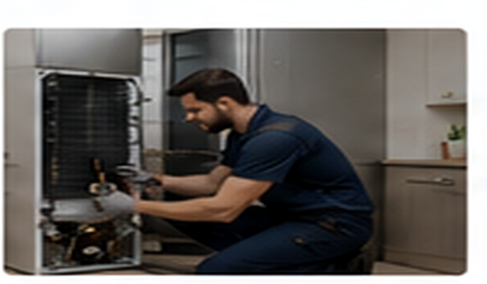
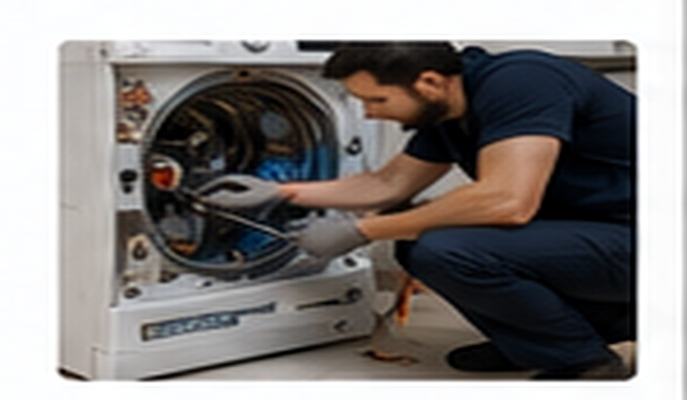
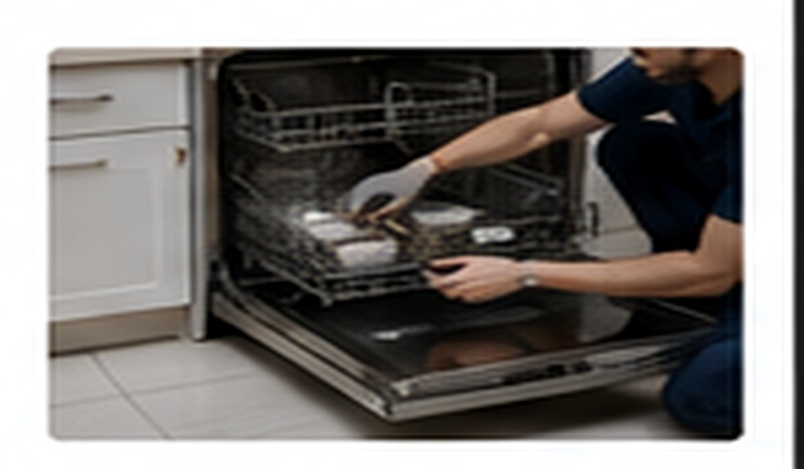
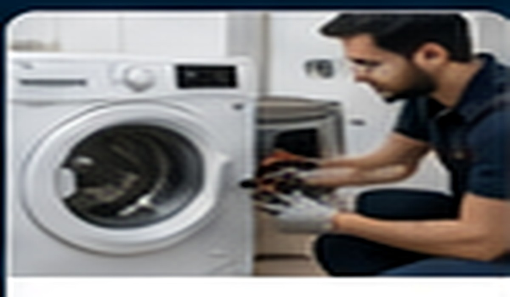
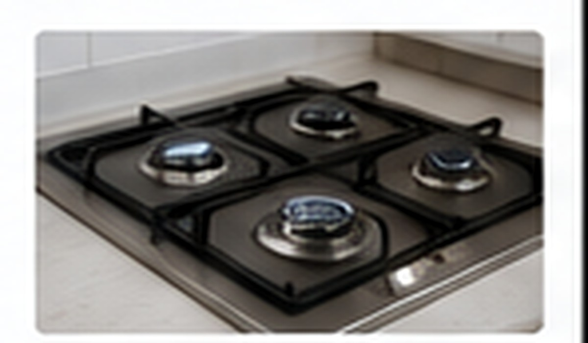
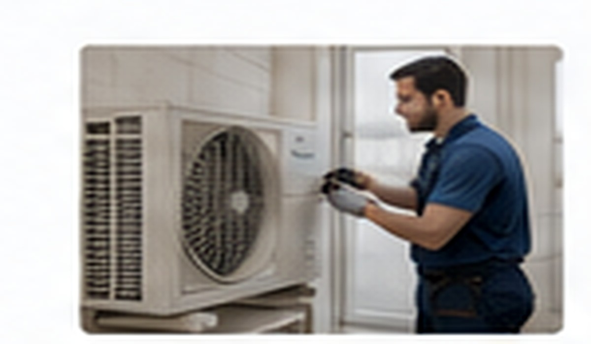
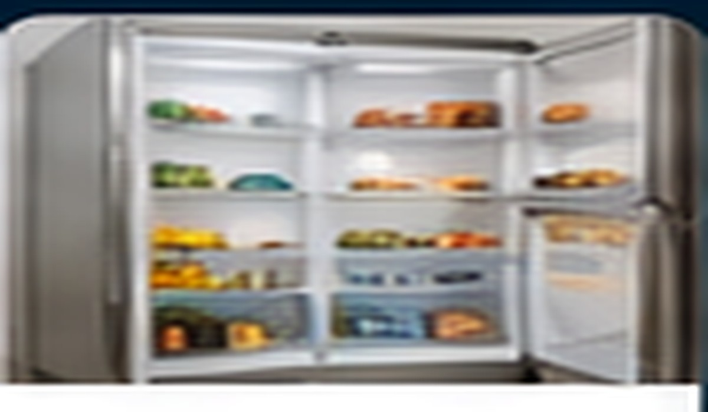

Buzdolabı Servisi
Soğutmama, aşırı ısınma, su akıtma, kompresör ve elektronik kart sorunları.
Hizmeti İncele →Beyaz eşya, klima ve kombi cihazları için servis ve bakım taleplerini cihaz türüne göre inceleyin.

Soğutmama, aşırı ısınma, su akıtma, kompresör ve elektronik kart sorunları.
Hizmeti İncele →
Dönmeme, sıkmama, kapak, kazan, rulman ve elektronik kart sorunları.
Hizmeti İncele →
Su akıtma, yıkamama, pervane, deterjan ve elektronik kart sorunları.
Hizmeti İncele →
Kurutmama, ısıtmama, ses ve program sorunları.
Hizmeti İncele →
Isıtma, termostat, rezistans, ateşleme ve panel sorunları.
Hizmeti İncele →
Temizlik, bakım, performans kontrolü ve uygun arızalarda teknik destek.
Hizmeti İncele →
Isınma, sıcak su ve genel çalışma sorunlarında teknik destek talebi.
Hizmeti İncele →
Soğutmama, buzlanma, ses ve elektronik sorunları.
Hizmeti İncele →Cihazın marka-model bilgisini, yaşadığınız arızayı ve varsa hata kodunu paylaşmanız faydalıdır.
Cihazınız ve yaşadığınız sorun hakkında kısa bilgi verin.